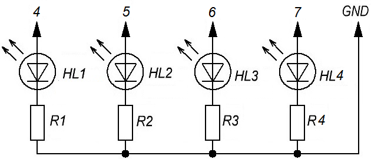
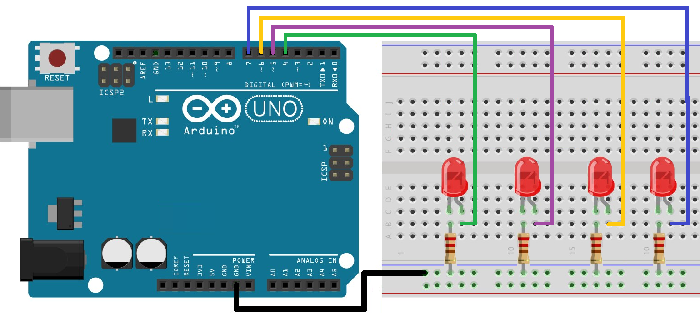

Управление несколькими светодиодами
Компоненты:
- Микроконтроллер Arduino UNO.
- Макетная плата.
- Светодиоды - 4 шт.
- Резистор сопротивлением 200-300 Ом - 4 шт..
- USB-кабель.
- Соединительные провода.
Установите 4 светодиода на плату и соедините их с резисторами на 220 Ом и выводами Arduino, как показано на рисунке 1.


Для того, чтобы включать и выключать светодиоды по очереди надо написать скетч.
Скетч 1
int led1Pin = 4; int led2Pin = 5; int led3Pin = 6; int led4Pin = 7; void setup() { //установка выводов в режим вывода pinMode(led1Pin, OUTPUT); pinMode(led2Pin, OUTPUT); pinMode(led3Pin, OUTPUT); pinMode(led4Pin, OUTPUT); } void loop() { digitalWrite(led1Pin, HIGH);//зажечь 1-й светодиод delay(1000); //задержка 1 сек digitalWrite(led1Pin, LOW); //погасить 1-й светодиод delay(1000); digitalWrite(led2Pin, HIGH);//зажечь 2-й светодиод delay(1000); digitalWrite(led2Pin, LOW); //погасить 2-й светодиод delay(1000); digitalWrite(led3Pin, HIGH);//зажечь 3-й светодиод delay(1000); digitalWrite(led3Pin, LOW); //погасить 3-й светодиод delay(1000); digitalWrite(led4Pin, HIGH);//зажечь 4-й светодиод delay(1000); digitalWrite(led4Pin, LOW); //погасить 4-й светодиод delay(1000); }
Данный скетч не является рациональным решением. Для того, чтобы улучшить код, применим оператор счетного цикла for. Счетный цикл применяется, когда надо повторить одно и тоже действие несколько раз.
Скетч 2
int ledPin = 4; void setup() { //инициализация выходов for (ledPin=4;ledPin<8;ledPin++) pinMode(ledPin, OUTPUT); } void loop() { for (ledPin=4;ledPin<8;ledPin++)//для пинов 4-7 { digitalWrite(ledPin, HIGH);//включить светодиод delay(1000);// ждать 1 сек digitalWrite(ledPin, LOW);//выключить светодиод delay(1000);//ждать 1 сек } }
В первой строке мы объявили переменную (ledPin) и присвоили ей значение 4. В заголовке оператора цикла изменяем это значение от 4 до 7 (ledPin<8) с шагом 1(ledPin++).
При управлении светодиодами, с начала ledPin=4 и светодиод на 4 выводе включается и выключается с задержкой 1 с. После этого значение ledPin увеличивается на 1 и начинает работать вывод 5. Так происходит до тех пор, пока значение ledPin не станет равным 7